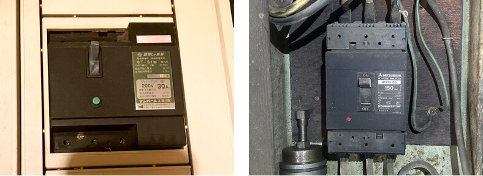
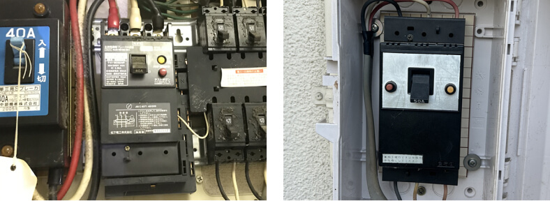

ジモデン登録の
電気工事店なら
30Aが
24,200円(税込)
ブレーカー交換で知っておきたい 交換費用相場と 適正業者の探し方


ブレーカー交換費用と業者選びのポイント
Index
01 ブレーカー/漏電ブレーカー交換費用の相場
- 住宅用漏電ブレーカー
-
25,000円～
40,000円 - 安全・（子）ブレーカー
-
10,000円～
15,000円 - 店舗などの漏電ブレーカー
-
40,000円～
80,000円
-
※ ブレーカーが落ちる原因は、ブレーカー自体が故障して勝手に【切】になる場合と、漏電や短絡（電気の事故）が発生して動作している場合の２通りがあり、知識のない方では原因を特定するのは困難です。
住宅でしたら電力会社へ連絡、住宅以外の建物は電気工事業者へ依頼をしましょう。
1 住宅用漏電ブレーカー交換費用
-
住宅で多く使用されている漏電ブレーカーの例 住宅のメインブレーカーとして漏電ブレーカーが設置されていることは多く、実際に漏電が起こり動作することもあれば、漏電ブレーカーが故障して、実際には漏電をしていないのに【入】にできなくなることもあります。
住宅で使用されている漏電ブレーカーは30Aから60Aが多く、交換費用は比較的安価です。電気工事業者による漏電ブレーカー交換費用の相場を解説します。漏電ブレーカー30A 漏電ブレーカー40～60A 漏電ブレーカー交換費用の相場
- 30A（アンペア）
- 24,200円
- 40A ～ 60A
- 28,600円
- ※出張費、漏電ブレーカー、工事費、消費税など全てを含んだ費用
2 商業施設などの大きな漏電ブレーカー交換費用
-
店舗、事務所、工場などで使われている漏電ブレーカーは30A～250Aまで幅広い 現在はメインブレーカーとして漏電ブレーカーを使用することは稀ですが、20年程前まではメインブレーカーとして漏電ブレーカーを使用するのが一般的でした。そのため、１ヵ所の漏電により全停電したり、漏電ブレーカーの故障により電気が全く使えなくなることもあります。
現在の漏電ブレーカーは小型化されていることが多く、現行品とはサイズが合わずに分電盤の改造が必要になることもあり、工事費が高くなる傾向があります。商業施設で使用されている漏電ブレーカー交換費用の目安
- ～１００Ａ
- 44,000円程
- ～２００Ａ
- 88,000円程
- ※大きな漏電ブレーカーは本体も高額になり、取替工事も設置状況により改造が必要など、ブレーカー取替工事費用は大きく変動します。
- ※表示金額は目安となります。
3 子ブレーカー交換費用
-

安全ブレーカー コンパクトブレーカー 子ブレーカーと呼ばれ、古い住宅で４個程、現在の住宅では２０個程あり、【玄関・廊下・トイレ】、【洋室エアコン】など場所ごと電気の事故を守っているブレーカーです。子ブレーカーが故障してONにできないことはかなり稀で、配線や機器が故障してブレーカーが正常に動作している、又は電化製品の同時使用による過電流でブレーカーが切れることが多い。安全ブレーカーは各メーカー同じ大きさで、コンパクトブレーカーは各メーカー専用設計のため、メーカーを合わせないと取付けできません。
子ブレーカー交換費用の相場
- １００Ｖ用
- 11,000円
- ２００Ｖ用
- 12,100円
- ※出張費・漏電ブレーカー、工事費、消費税など全てを含んだ費用
02 ブレーカーの交換時期目安
ブレーカーは種類によりますが、漏電・過負荷（使い過ぎ）・短絡（電気の事故）などの異常事故から守るための安全装置です。住宅用ブレーカーは１３年、その他は１５年とされている交換推奨時期を超えたブレーカーは異常事故を守る装置が故障しているかもしれません。またブレーカー本体の故障により勝手に【切】になることもありますので、交換推奨時期を超えたブレーカーは交換したほうがよいでしょう。
1 ブレーカー交換推奨時期は１３年～１５年
-
 ４０年以上経過して故障したブレーカーの例 ブレーカーの役割は異常事態から守ることです。電気が正常に使えていても、異常時に動作するかはわかりません。漏電による感電や火災を守り、電気の使い過ぎや電気の事故時に電線を守る装置が故障していれば、ブレーカーが動作せずに、大きな事故につながるかもしれません。
ブレーカーを製造するパナソニックでは、住宅用は１３年、その他は１５年をブレーカー更新推奨時期としています。
2 漏電ブレーカーは故障することが多い。
-
 故障して【入】にできなくなった漏電ブレーカー 漏電ブレーカーは住宅や店舗などの商業施設でメインブレーカーとして使用されていることはかなり多く、故障してレバーが上がらなくなり、交換するまで停電が続きます。
特に真冬と真夏に故障が多くなります。
03 各ブレーカーの役割と落ちた(OFF)時の対処方法
住宅・小規模商業施設の分電盤内にはアンペアブレーカー、漏電ブレーカー、子ブレーカーの３種類のブレーカーが設置されており、それぞれ役割があります。ここでは３種類のブレーカーが落ちてしまった時の対処方法を解説します。
1 アンペアブレーカー (サービスブレーカー)
-
アンペアブレーカーの役割
サービスブレーカーとも言われ、電力会社と契約している電流を超えると遮断されます。アンペアブレーカーは電力会社の所有物のため、故障や容量変更による工事費は無料です。関西電力、中国電力、四国電力、沖縄電力管轄地域では設置されていません。
アンペアブレーカーが落ちた
アンペアブレーカーが落ちた時に
- すぐに上がった（ONにできた）場合は契約電流を超えて電気を使用しただけのため、問題はありません。
- すぐに上がるけど何度も落ちる時は、契約電流を超える電気を頻繁に使用していますので、契約を上げることができるか電力会社へ確認しましょう。
電気をあまり使用していないのにアンペアブレーカーが落ちる場合は管轄の電力会社へ連絡して交換してもらいましょう。故障又は増設によるアンペアブレーカーの取替えは無料です。
2 漏電ブレーカー
-
漏電ブレーカーの役割
漏電ブレーカーは漏電、電気の使い過ぎ、電気の事故を守るブレーカーです。住宅の古い漏電ブレーカーは漏電のみを守る漏電保護専用タイプが設置されていることもあり、３０Ａ→４０Ａへの契約増設の際に、漏電ブレーカーを交換しないと契約増設ができない、と電力会社から言われた場合は、使い過ぎ（過電流）を保護できる漏電ブレーカーへ取替えを依頼しましょう。
漏電ブレーカーが落ちた
住宅や小規模商業施設のメインブレーカーとして漏電ブレーカーが設置されている場合、電気の使い過ぎにより漏電ブレーカーが落ちることは少なく、漏電が発生して落ちる、又は漏電ブレーカーの故障が考えられます。
漏電ブレーカーが落ちた時に
- すぐに上がった（ONにできた）場合はしばらく様子を見ましょう。
- 上げようとすると、すぐに落ちてしまう場合は漏電している、又は漏電ブレーカーの故障が考えられます。漏電して落ちている場合は、漏電している回路（子ブレーカー）を切れば、停電範囲を最小限にできますので、手順を解説します。
漏電回路の特定手順
漏電している場合は、②の漏電している子ブレーカー（回路）を落とせば①の漏電ブレーカーを復旧できます。
- まずは①と②を全て落とします。（アンペアブレーカーがある場合は、アンペアブレーカーを【入】にしておきます）
- ①を入れます。この時①が入らない場合は①の漏電ブレーカーが故障していますので、新品へ取替える必要があります。
-
①が入ったら、②をどこからでもいいので１個ずつ入れます。
②の漏電している回路を入れた時に①が落ちますので、①が落ちた時の②を【切】にしたまま、その他のブレーカーを全て入れます。
漏電の原因は、外部照明に水が入っている、外部コンセントが破損して濡れている、給湯器や温水器が故障しているなど様々です。電気工事の知識がないと危険なので、漏電箇所の特定（漏電調査）には電気工事業者への依頼が必要となります。
漏電調査の費用と流れ
漏電調査とは、
- 漏電箇所を特定する調査
- 故障している機器の取替費用は別途
- １人で１時間あたり16,500円程の調査費用
- 住宅や小規模施設なら１人１時間でほぼ特定できる。
- 調査費用には測定器の使用、機器の脱着、簡易処理が含まれる
- 基本料、照明器具１台脱着でいくら、測定器の使用でいくら、などの加算式は電気工事業者としてありえない。
- 例えば、１人で１時間あたり16,500円です、１時間ベストを尽くして必ず特定します！これがまともな業者の考え方。
3 子ブレーカー
-
子ブレーカーの役割
子ブレーカーは古い住宅では４個程、新しい住宅では２０個程ある小さなブレーカーで、１つの子ブレーカーで２部屋の照明とコンセントなどの部屋単位や、電子レンジ、エアコンなどの専用回路として電気が送られています。
子ブレーカーは電気の使い過ぎ、電気の事故を守る装置です。子ブレーカーが落ちた
子ブレーカーが落ちる原因は、経験上使い過ぎが多く、古い住宅ではキッチンの専用回路がなく、電子レンジ、ポット、炊飯器などを１つの回路で使用しているため子ブレーカーが落ちてしまいます。
子ブレーカーが落ちた時に
-
すぐに上がった（ONにできた）場合は電気の使い過ぎです。
家電製品の同時使用で何度も落ちるようでしたら、専用回路を増設しないと解消できません。 -
上げようとすると、すぐに落ちてしまう場合は、配線の事故（ショート）、家電製品の故障が考えられます。
子ブレーカーが落ちて電気が使えない部屋の家電製品のコンセントを抜き、子ブレーカーが入る場合はコンセントを抜いた家電製品の故障となります。
それでも解消できない場合は電気工事業者へ依頼しましょう。
-
すぐに上がった（ONにできた）場合は電気の使い過ぎです。
04 ブレーカー交換のまとめ
ブレーカーが落ちて上がらない場合、特にメインブレーカーが落ちた時は全ての電気が止まってしまうので焦ってしまいますが、知り合いに電気工事業者がいない方が、すぐに業者を見つけるのは難しいと思いますので、まずは応急処置になりますが、電力会社へ連絡をして対処をしてもらい、ゆっくりと電気工事業者を探して直してもらいましょう。電力会社は停電などの緊急時に24時間対応しています。
1 電気工事業者による漏電ブレーカー交換費用相場
住宅で使用されている
一般的な漏電ブレーカー
- ３０Ａ（アンペア）
- 24,200円
- ４０Ａ～６０Ａ
- 28,600円
※出張費、漏電ブレーカー、工事費、消費税など全てを含んだ費用
3 どこへ頼めばよいのか？
電気工事業者
Expert
大規模施設や住宅などの電気工事を行う事業者。
事務所や倉庫で営業しているため、近くで営業していてもほとんどの方は気付かないと思いますが、精度に加えスピードを求められる仕事をこなしているので本物のプロと言えますし、迅速に動いてもらえるでしょう。
- 相場
-
漏電ブレーカー交換工事
22,000円～ - 依頼方法
- 電気工事業者のホームページにはブレーカー交換費用を明確に記載していない場合が多いので、問い合わせページから見積りを依頼しましょう。
街の電気屋
Electrian
パナソニックのお店やアトムなどの家電販売と小規模電気工事を行うお店です。街の電気屋はしっかりと料金表があり、高額請求されることはありません。
ただし、見積りのために来てもらうだけで出張費や見積料を請求される可能性があります。また、ブレーカー交換工事は相場より高めとなることが多いようです。
それでも高額請求がない、対応が早い点でオススメです。
- 相場
-
ブレーカー交換工事
25,000円～ - 依頼方法
- 現地確認（見積り）をしてもらうだけで費用が発生する場合があります。まずは問い合わせをして、おおよその金額を聞いてみましょう。
インターネット集客業者
Internet
くらしのマーケットやミツモアなどの集客業者です。実際に工事を行うのは提携している電気工事店となります。クチコミが掲載されているので安心感があります。
インターネット集客業者を通すと集客業者へ手数料が発生しますので、ブレーカー交換工事は割高となるでしょう。また、直接電話をできないので、すぐに直してもらうことは難しいでしょう。
- 相場
-
ブレーカー交換工事（部材費別途）
15,000円～ - 依頼方法
- 金額が明確な【くらしのマーケット】又は、【ミツモア】から近くの業者へ見積りを依頼する。
緊急時の電力会社連絡先
-
北海道電力ネットワーク
リンク先ページの市町村名の頭文字をクリックして管轄の支店へ連絡する
-
東北電力ネットワーク
-
東京電力パワーグリッド
-
北陸電力送配電
-
中部電力パワーグリッド
リンク先ページの事業所検索ページから担当区域の営業所へ連絡する
-
関西電力送配電
-
中国電力ネットワーク
リンク先ページの担当区域営業所へ連絡
-
四国電力送配電
リンク先ページの担当区域営業所へ連絡
-
九州電力送配電
リンク先ページの担当区域営業所へ連絡
-
沖縄送配電

電気工事施行管理20年の経験
保有資格：第一種電気工事士、１級電気施行管理技士。
電気工事の経験20年、独立後は自力で作成したホームページ集客のみで法人設立後も3年間黒字を維持。